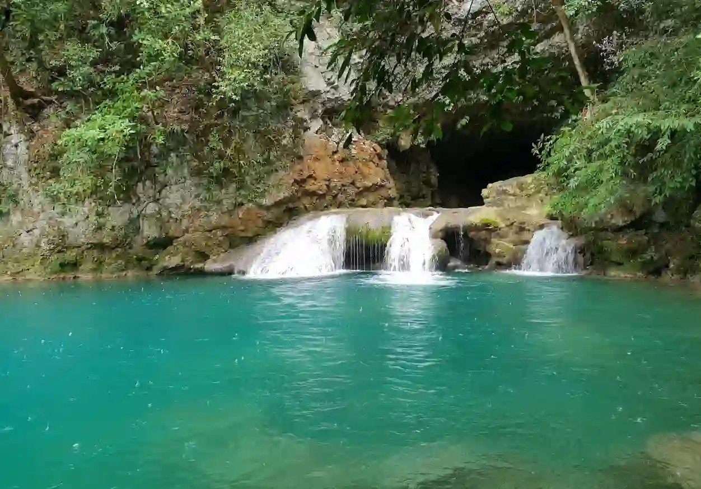
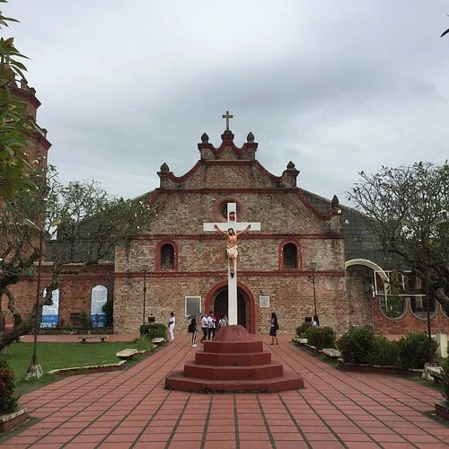
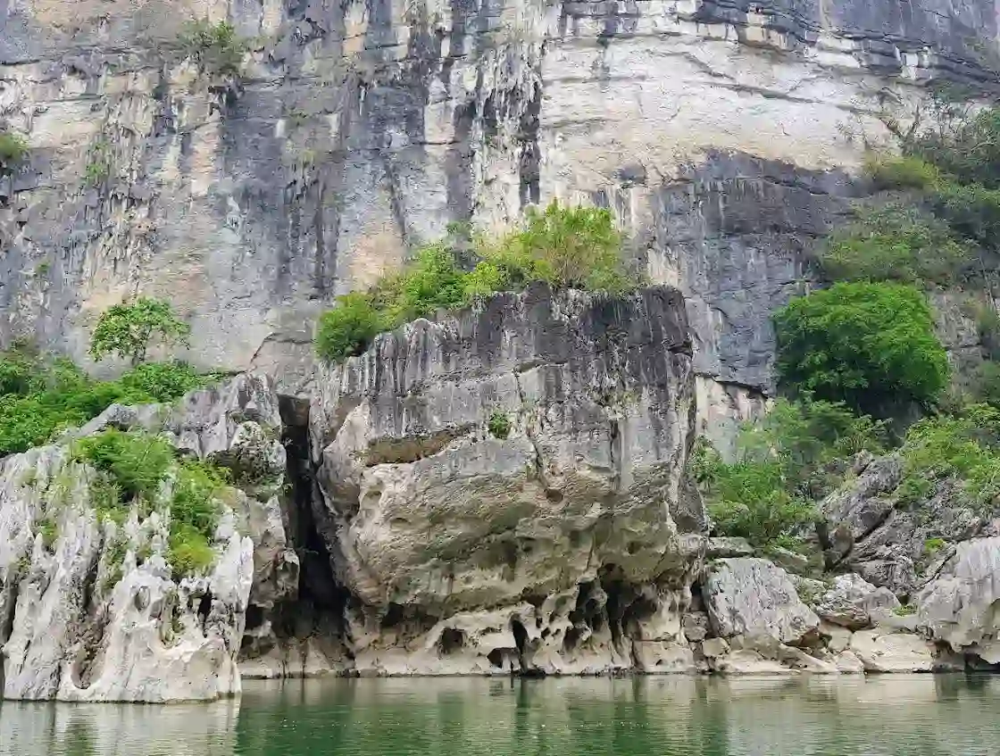

Batanes
Home of dramatic coastal cliffs, rolling pastures, and traditional Ivatan stone houses.
See Batanes →Experience pristine islands, majestic cave systems, emerald mountain passes, and vibrant heritage across Region 2.
Explore DestinationsExplore the unique beauty and culture of Northern Luzon's eastern paradise.
Home of dramatic coastal cliffs, rolling pastures, and traditional Ivatan stone houses.
See Batanes →
Famous for Callao Cave, pristine beaches, historical churches, and culinary delights.
See Cagayan →The Queen Province offering eco-parks, historical monuments, and rich agriculture.
See Isabela →
The citrus capital of the region surrounded by lush pine forests and mountain trails.
See Nueva Vizcaya →
The forest heartland featuring turquoise river gorges and thrilling water adventures.
See Quirino →